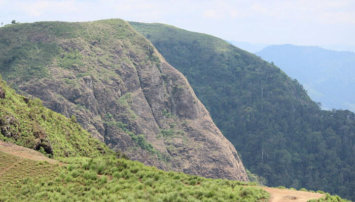

Munnar
Munnar rises as three mountain streams merge - Mudrapuzha, Nallathanni and Kundala. 1,600 m above sea level, this hill station was once the summer resort of the erstwhile British Government in South India.Sprawling tea plantations, picturesque towns, winding lanes and holiday facilities make this a popular resort town. Among the exotic flora found in the forests and grasslands here is the Neelakurinji. This flower which bathes the hills in blue once in every twelve years, will bloom next in 2030.

Kattappana Tourism
Kattapana is an infrastructurally fast-growing municipal town located in Idukki district, Kerala. The people of Kattapana are mostly involved in farming. There are various cultivation ranging from tea, coffee, pepper, and so on which gives the town a spread of greenery. The town has a number of religious places of visit.
Kumily Tourism
Separating Kerala and Tamil Nadu, this quaint little town is best known for its plantation walks, diverse wildlife, boating and trekking and its Ayurvedic massages.The primary tourist attraction here are the plantations and a walk through them is sure to give you an enjoyable experience. One can also enjoy boating and trekking as well as watching the huge variety of wildlife. Another place to visit is the Abraham's Spice Garden.
Parunthumpara
Parunthumpara is a quiet scenic landscape that has been attracting visitors recently. ‘Parunthu ‘which in Malayalam means an eagle and ‘para’ meaning a rock, in essence, describes the natural terrain of Parunthumpara.
